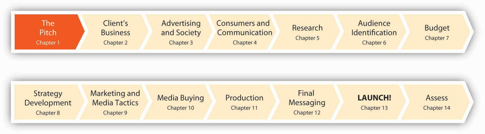

Figure 1.1 Fourteen Months to Launch!
After studying this section, students should be able to do the following:
The textbook publishing industry is undergoing staggering change as many traditional business models and practices quickly lose relevance. Peer-to-peer textbook trading networks, online used-book sellers, and a gray market that allows low-priced international editions to displace expensive U.S. texts push publishers to reconsider outmoded ways of delivering content. Likewise, the digital natives who make up our university student bodies (that’s you!) inspire educators to think about the transfer of knowledge in exciting new ways.
How do we best communicate the most current thinking in our disciplines to students who expect up-to-the-minute information at a keystroke and who view educational materials as community—indeed, world—resources that can and should be shared and interactively constructed?
Enter Unnamed Publisher, an innovative, open source publishing company. We’ve created a new kind of text—one premised on the idea that college course material can wield wider influence and be of greatest public benefit as it becomes easily and inexpensively available to anyone with a desire to learn.
Figure 1.2
Knowledge in a Flat World…Choose only what you want. Pay only for what you use.
A new alternative to introductory texts that can cost into three figures and provide information that is extraneous or outdated, Launch! offers a basic text at no cost to students. Instead, we generate revenue through individually priced materials such as discretionary hard copies of the text (for those of you who still like to mark up your book the old-fashioned way), study guides, podcasts and streaming interviews (à la iTunes), user-generated content, advertising sales, and corporate sponsorships.
There’s something else that’s really unique and cool about Launch! Welcome to the first advertising textbook written in partnership with a real-life advertising agency. It’s fine to talk about ad campaigns from the past, but we’d rather hear about one from the horse’s mouth—while it’s still happening. We’re going to teach you about the ad biz the way you’ll learn it if you choose to make it your career (and we hope you do). None of that shiny, happy, “talking heads” stuff; we’re going to take the gloves off and show you how a campaign works (and sometimes doesn’t) from the vantage point of the people who have to do it every day. Prepare to Launch!
After studying this section, students should be able to do the following:
Get to know Shepardson, Stern and Kaminsky (SS+K) as it works on a campaign for msnbc.com, a media brand in search of an identity. SS+K opened its doors in 1993 and now has offices in New York, Boston, and Los Angeles. With over $70 million in billings, SS+K is an independent agency owned by its partners, with a minority ownership by Creative Artists Agency (CAA)—perhaps the most powerful talent and literary agency in the world. CAA also owns the Intelligence Group, a market research and trend forecasting company.
Figure 1.3

SS+K’s Web site is an immersive introduction to the history and offerings of the agency. You can find it at ssk.com.
For this text, we interview the agency partners, the creative director, the account people, the creative team (copywriter and art director), the public relations experts, the account planners and research specialists, and the digital professionals who took the msnbc.com campaign from pitch to completion. And, a member of our author team knows this agency up close and personal: Amit Nizan was the account manager at SS+K who lived and breathed the msnbc.com campaign. A 2003 graduate of the renowned undergraduate advertising program at the University of Florida, Amit will help us take you through the planning and execution of this campaign as a young, dynamic advertising professional actually experienced it. Not too long ago she was a student just like you, so she feels your pain!
Through their words and documents you will follow, step by step, the thirteen-month process of bringing SS+K’s campaign vision of “A Fuller Spectrum of News” to light. To allow us to bring you the inside story on how the agency created the msnbc.com campaign, msnbc.com and SS+K granted FWK full access to its creative work, internal processes, and employees. The result is a resource that offers new ways to teach and talk about the real world of advertising with course content that is affordable, accessible, timely, and relevant. Welcome to advertising education on steroids.
SS+K was founded in 1993 by three former political consultants—Rob Shepardson, Lenny Stern, and Mark Kaminsky—and a famous copywriter, David McCall. To this day, the agency is a mash-up of those roots in politics and creativity, bolstered by a dose of entertainment marketing via its partnership with CAA and the staff’s passion to learn and apply the latest technology. SS+K has become a haven for talented refugees from every corner of the communications world.
SS+K offers a full array of services to its clients, including advertising, marketing, design, public relations, public affairs, and research. Although many ad agencies, PR firms, and marketing consultancies endorsed integrated strategies over the last decade, SS+K believes that most agencies have built-in biases toward one type of solution. They tend to treat “integration” as an item on a check-off list. Ad agencies think in terms of ads. PR shops generate PR ideas. And so on…but not SS+K. For them, it is about delivering the right message at the right time to the right audience with the right medium. They call their approach to these types of media-neutral ideas Asymmetric CommunicationsSS+K’s trademarked technique of mapping their client’s issue, brand, competition, and target audience to develop a big idea that will drive their marketing and communications.. Their perspective encourages the agency to “think outside the box” by employing a mix of traditional and new media (like urban games) to engage the audience in surprising ways and uncover opportunities to connect with them.
Figure 1.4 View of the Brooklyn Bridge from SS+K’s New York Office

This perspective is a consumer-centric approach the agency uses to find unique and surprising ways for clients to connect with and engage their target audiences. For example, instead of using traditional methods and messaging to increase awareness of Qwest Wireless among high school students, Qwest worked with SS+K to design an urban game called ConQwest that involved teams of students, newly created semacodes for use on cell phones, and giant inflatable game pieces. Semacode is a trade name for machine-readable two-dimensional black and white symbols that act as “barcode URLs.”
True to their political roots, the agency consulted with the Obama presidential campaign on driving more interest and participation among young voters. Since its inception, SS+K has maintained a high-profile nonprofit business, including work with UNICEF, Share Our Strength, the Bill & Melinda Gates Foundation, and the Lance Armstrong Foundation’s “LIVESTRONG” campaign.
The agency understands how to work with short lead times and mine for deep consumer insights that animate its work. It’s a combination that has made SS+K increasingly popular with a growing roster of clients, including Delta Airlines, Credo Mobile, Polo Ralph Lauren, AutoMart—and our client for this book, msnbc.com.
After fifteen years in business, all three founding partners—Rob Shephardson, Lenny Stern, and Mark Kaminsky—are still active in the firm, and they’ve added other key partners such as Executive Creative Director Marty Cooke to continue to provide fresh ideas and leadership.
Figure 1.5 The Partners of SS+K

Here’s how we got started: once SS+K agreed to participate in this unique partnership, it was time for us to become familiar with the campaign. First, our intrepid author Lisa Duke Cornell reaches out to Russell Stevens, a partner at SS+K.
Figure 1.6

Follow the e-mail trail.
Dr. Duke Cornell flew up from Gainesville (where she teaches advertising at the University of Florida) and came in to meet the whole SS+K crew, teach them a little about Unnamed Publisher, and learn a lot about SS+K. Throughout the text, you will find links to the interviews Dr. Duke Cornell conducted with the team based in New York. In addition, she interviewed key team members from the Los Angeles and Boston offices.
Amit Nizan joined the author team in the spring of 2008. Drawing on personal knowledge of the agency and the msnbc.com account, Ms. Nizan immersed herself in the interviews and information the team provided to Dr. Duke Cornell.
Launch! unfolds chapter by chapter across a timeline for msnbc.com’s first branding campaign. Before we get into that, let’s meet the full cast of characters who worked on the msnbc.com account with Ms. Nizan.
Figure 1.7

Meet the core SS+K Team assigned to the msnbc.com account.
Additional SS+K employees worked on aspects of the msnbc.com account, including Jeannie O’Toole (Head of Print Production), John Kirkwood (Web and Video Production), Tim Player (Studio Manager), Kelly Kraft (Project Manager), Amy Gaiser (PR), Janetti Chon (PR), Aaron Taylor-Waldman (Studio Designer), Alice Ann Wilson (Head of Design), Natalie Cho (Designer), Sonya Fridman (Designer), Joe Sayaman (Copywriter), and Rochelle Ardesher (Project Manager).
As you can see, it takes a village to work on an account. Each of the people beyond the core team contributed their respective expertise to the production and execution of the first-ever msnbc.com branding campaign.
How is an ad agency not an ad agency? SS+K does not consider itself an advertising agency, but instead a creatively-driven strategic communications firm that solves problems through a variety of innovative techniques—including but not limited to traditional advertising approaches. You’re going to see throughout this book that SS+K is not alone in this regard—the advertising industry seems to change its stripes almost daily as new technologies and trends evolve!
As a remnant from SS+K’s founders’ days as political consultants the agency uses an integrated modelA full array of services offered to clients including advertising, marketing, design, public relations, public affairs, and research.. SS+K is media-agnosticWillingness to use any medium or discipline to solve a client’s problem as long as the solution delivers the right message at the right time to the right audience with the right medium.; this means it doesn’t care what medium or discipline it uses to solve a client’s problem as long as the solution delivers the right message at the right time to the right audience with the right medium.
Working Together
(click to see video)Marty Cooke explains how different disciplines mesh at SS+K.
Welcome to a new model of textbook learning. This book is different from others in two really important ways:
The SS+K agency is going to help us learn how to do advertising by actually doing advertising. Follow along with us as we chronicle its efforts to win the important msnbc.com account and then deliver on its strategy to make this media brand the source of news for the customers the site hopes to reach.
After studying this section, students should be able to do the following:
How does the client decide which agencies to work with? It all starts with the pitchProcess in which a client invites an agency to present itself with the hope of winning the account., where the client invites an agency to present itself with the hope of winning the account. Once a client decides on a list of agencies to pitch their business, it may send these agencies a request for proposal (RFP)Communication to agencies in which the client lays out basic information about its business and requirements for the job.. In an RFP, the client lays out basic information about its business and requirements for the job, along with a list of questions that will help the client determine how the agencies work and if they are suited to the task at hand.
In some cases, agencies may approach clients they feel would be a good match for their talents or would add depth or luster to their roster. Alternatively, when agencies are well known for a particular campaign or approach, clients will seek them out. However, just as when an individual is searching for work, word of mouth and personal relationships play an important role in the process. It’s not just what you know, it’s who you know.
The client’s stake in agency pitches is high: management’s jobs, the brand’s future, and millions of dollars may ride on the campaigns the winning agency creates. For example, in 2007, despite having spent over $900 million on marketing that year, Microsoft was not performing well against competitors such as Google and Apple. Identifying a key need to boost market share, the software giant embarked on a search for a new agency to enhance its brand image. By February of 2008, Microsoft had narrowed its search to two agencies; it then chose Crispin Porter + Bogusky for a new $200–300 million “consumer blitz.”Rupal Parekh and Alice Z. Cuneo, “Microsoft Narrows to Crispin, Fallon,” Advertising Age, December 21, 2007, http://adage.com/agencynews/article?article_id=122776 (accessed July 16, 2008).
Just as the client invests large sums in the advertising campaign, the costs for agencies also are enormous, whether or not they win the business. In order to pitch effectively, the agency must allocate material resources and a tremendous number of team hours to meetings, research, and creation of the pitch. Sometimes, when the assignment, chemistry, or timing isn’t right, it’s just good business for the agency to walk away and leave millions of dollars in potential billings on the table.
That’s what happened in 2006, when GSD&M (now known as GSD&M Idea City)’s nineteen-year relationship with its client Wal-Mart was challenged in a client-initiated review for their business. In one of the first review meetings the incumbent agency had with its longstanding client, GSD&M agency president Roy Spence played a clip from the movie Dumb and Dumber, in which the romantically challenged character played by Jim Carrey is told by the girl of his dreams the chances they will be together are one in a million. Carrey replies, “So…you’re telling me there’s a chance?”“Wal-Mart, Please Don’t Leave Me,” Business Week, October 9, 2006, http://www.businessweek.com/magazine/content/06_41/b4004076.htm (accessed July 16, 2008).
Spence’s attempt at lightheartedness hid a hard truth: there was no salvaging the relationship. GSD&M was unsuccessful in its pitch for the business, which included a poorly received report suggesting that Wal-Mart’s declining reputation was at the root of its struggle for higher share prices. In an interesting turn of events, the agency that “won” the business, Draft FCB/Chicago, was dropped in a matter of months, and Wal-Mart once again invited GSD&M to pitch its business. This time, GSD&M swallowed hard and passed on a chance at the $580 million assignment. Like the song goes, you gotta know when to hold ’em and know when to fold ’em.
Marketers who work on the brand for the client are the ones who initiate the pitch process when they make the decision that they would like to search for an agency. The person within the organization who generally leads the search is the chief marketing officer or the vice president of marketing.
Some marketers choose to partner with a search consultancy whose job is to conduct the search. They use different methods to determine which agencies are the most appropriate fit for their client’s pitch. They also work as liaisons between the client and the competing agencies to handle questions and logistics and to structure the pitch.
The pitch process can be short or long, depending on the information the client requests in order to make the decision. There is usually a series of steps, including but not limited to these:
Figure 1.8 The msnbc.com RFP

This is the first page of the RFP that msnbc.com sent to SS+K and other agencies.
Figure 1.9 The Pitch Process

How do agencies demonstrate to clients they are the right choice for the job? In a recent interview well-known account planner Jon Steel noted, “I have always believed that the best new business weapon in an agency’s armory is the quality and effectiveness of the work it produces for its existing clients.” However, another way that agencies have demonstrated their creative ability is to present “spec” (speculative) creative work in pitches. Spec workPreliminary ideas based on the agency’s best guess as to what might appeal to and work best for a client and presented in a form that is very close to “finished.” is developed based on the agency’s best guess as to what might appeal to and work best for a client and presented in a form that is very close to “finished.”
The problem with spec work is that many in the industry feel it devalues skills such as design, art direction, and copywriting—as it forces agencies to give away for free (or at a substantially reduced cost) their most valuable product: their creativity. In the end, ownership of the ideas presented during pitches can be contested; clients who have had a number of agencies pitch creative work have been known to pick and choose among the best of all the pitching agencies’ ideas while awarding the business to just one. As a result, the American Association of Advertising Agencies (AAAA) created a Positioning Paper outlining best practice guidelines for the use of “spec” creative in the new business process: http://www.aaaa.org/eweb/upload/6712_att.pdf.
What’s your opinion? Should agencies be compensated for “spec” work even if they don’t win the account?
You can’t work on an account until you’re awarded the business. To win a client you have to present a pitch, usually along with several other agencies. Although the client doesn’t (or shouldn’t) expect to see a finished campaign, it will look for evidence that your team has put a lot of creative thought and effort into fleshing out its vision of what the advertising will look like. Preparing a pitch can be an expensive, grueling, and nail-biting experience, so an agency shouldn’t throw its hat into the ring unless it’s willing to make a commitment to go all out in order to win the business.
After studying this section, students should be able to do the following:
Established in 1996 as a joint venture between Microsoft and the National Broadcasting Corporation (NBC), ten years later msnbc.com finds itself in an increasingly crowded field of news providers and hopes to add new users to its twenty-five million unique visitors a month. As msnbc.com’s VP of marketing, Catherine Captain, says, “I am particularly concerned about distinguishing ourselves in a market where every new site is starting to look a lot alike.”
It is important to understand that the client is msnbc.com the Web site and not MSNBC the cable channel. Although the Web site msnbc.com and the cable channel MSNBC were launched together in 1996, they have always maintained separate corporate structures and news operations. NBC and Microsoft remain fifty-fifty partners in msnbc.com, but Microsoft has reduced its stake in the television network to 18 percent. And msnbc.com is editorially and financially separate from MSN, the portal site and online service operated by Microsoft, although it acts as that site’s primary news provider.
In addition to original content from its staff, which is based out of the newsroom in Redmond, Washington, msnbc.com is the news Web site for the NBC News family. It also features content from the cable television news channel MSNBC, NBC shows such as Today, NBC Nightly News, and Dateline NBC, and partners such as the New York Times and the Washington Post. In addition, msnbc.com made its first acquisition in late 2007 when it bought Newsvine, a Web site with community-driven news stories and opinions.
In its history as a company, msnbc.com never pursued or launched a branding campaign until Ms. Captain arrived just shy of the site’s tenth anniversary. In her quest for the right agency, Ms. Captain sent RFPs “to a whole slew of potential agencies.”
Objective: Win the msnbc.com account!
I knew that SS+K was the perfect agency for her, because we come from the same philosophy.
Danielle Tracy, SS+K vice president
Michelle Rowley and Russell Stevens
(click to see video)Russell describes the response from the SS+K perspective and how they approached the RFP from msnbc.com.
You can guess the outcome: Catherine Captain chose SS+K to reintroduce msnbc.com to the world. Her goal was to maximize the impact of her modest $7 million marketing budget. Instead of choosing an interactive agency, which she said would “predetermine her plan,” Captain preferred the “media-agnostic” approach of SS+K. And so, in March of 2006, a decade-old msnbc.com announced it would soon launch its first branding campaign.
The idea of integrated marketing communications has been around for a long time. But the independently held SS+K embraced the concept in a way that only people from a disparate number of camps could: there are no well-populated traditional territories in the agency. Instead, it is home for a multidisciplinary cast of communication experts as well as a collection of “formers”—former actors, scientists, journalists—galvanized by a combined passion for strategic innovation and, as Captain observes, challenging the status quo. There is no allegiance to method or medium; advertising doesn’t get preferential treatment over public relations or other buzz boosters.
Catherine Captain
(click to see video)Catherine describes what made SS+K the right fit, and the importance of understanding the consumer.
SS+K’s team developed its pitch by doing its homework about the types of people who visit Web sites to get their information. The agency also wasn’t afraid to think creatively about using a variety of media to capture their interest. As a result of this effort the agency won the msnbc.com account. Now the work really starts.
What were the key contributing factors that allowed SS+K to win the msnbc.com account? Be sure to comment on the roles played by Joe Kessler, Danielle Tracy, and Catherine Captain.
Now that you have read this chapter, you should be able to understand how a real advertising agency pitches a real client:
As you have read in the chapter, SS+K is a multifaceted organization that specializes in helping clients with their unique communication problems. Review the listing of SS+K personnel. Once you have completed this review, link to the SS+K Web site http://www.ssk.com for more information on the company.
Agency Statement: “With offices in New York, Boston, and Los Angeles, SS+K has become a magnet for refugees and misfits from the most potent pillars of American society: politics, creative, entertainment, and technology. We believe that when smart, talented people from different backgrounds sit down to solve a problem, the solutions are bigger, more unpredictable and more effective. We believe it is more important to understand your business issues, delve into consumer insights and work with you to find the best solution for the brand regardless of channel. At SS+K, we don’t care what media or discipline we use to solve a client’s problem; it’s about delivering the right message at the right time in the right medium.”“Shepardson Stern + Kaminsky (SS+K),” O’Dwyer’s Database of PR Firms, http://www.odwyerpr.com/pr_firms_database/prfirm_detail.htm?prid=d7df07ef171a403c34e195e0ef90e0c2 (accessed February 10, 2009).
Using the SS+K Web site (or other search engines), review the agency’s past work. Carefully examine one of the following campaigns that SS+K has created: the Lance Armstrong Foundation, Delta Airlines, Qwest Communications, UNICEF, or the Bill & Melinda Gates Foundation. Based on your review, comment on how SS+K seems to have applied its Asymmetric Communications model to the selected client’s communication problems. Try, if possible, to pinpoint the Asymmetric IdeaSS+K’s method of engaging the audience in surprising ways and uncovering opportunities to connect with them. SS+K developed that seems to be the focal point of communications. What do you think of SS+K’s approach for the selected client?
SS+K has made a pitch to secure the communications business of msnbc.com. Beyond material supplied in the chapter, what do you really know about proposed client msnbc.com? Visit http://www.msnbc.com to gain additional insight.
As you review the msnbc.com Web site, list three msnbc.com offerings that impress you. Additionally, cite any features that either don’t impress you or are missing from the Web site. Once you have completed this task, visit rival news service CNN at http://www.cnn.com. Again, list three services that impress you and cite any features that either don’t impress you or are missing from the CNN Web site. As you make your evaluations, remember to review only the Web sites of the two organizations and not their televised news broadcasts. How does msnbc.com stack up against its rival? How could SS+K use your evaluation to improve the msnbc.com Web site? Be specific in your comments. As we go forward in our discussion of SS+K’s communication and advertising strategy for msnbc.com, see how many of your suggestions are recognized and addressed.
Almost all teens have difficulties with acne. Acne is not only a health issue but a social one as well. If you ever had difficulties with acne, what would you have given to rid yourself of those unsightly blemishes? To examine a new solution to this age-old problem, visit the Zeno Web site at http://www.myzeno.com.
Zeno is, according to its Web site, “the new secret weapon in the war against pimples.” Consider the following facts as you explore how Zeno works. The Zeno device looks like a cell-phone. It is a hand-held battery-operated device that is designed with a tip that heats to a preset temperature. Once the tip is heated properly and applied to the skin, the blemish disappears in a relatively short time. Much of the procedure is customized to the user and his or her skin type. The level of heat does not cause skin damage.
After exploring the Zeno Web site and learning about the application procedure and facts about the product, develop a brief “pitch” to present to the Zeno organization. The objective of your agency’s pitch will be to demonstrate the best method for introducing the Zeno product to college-age students. Consider the basic message to be delivered to this target market and the best way to transmit that message to them. What do you perceive to be the keys in reaching the college-age students in your target market? Discuss your pitch idea and conclusions with your peers.